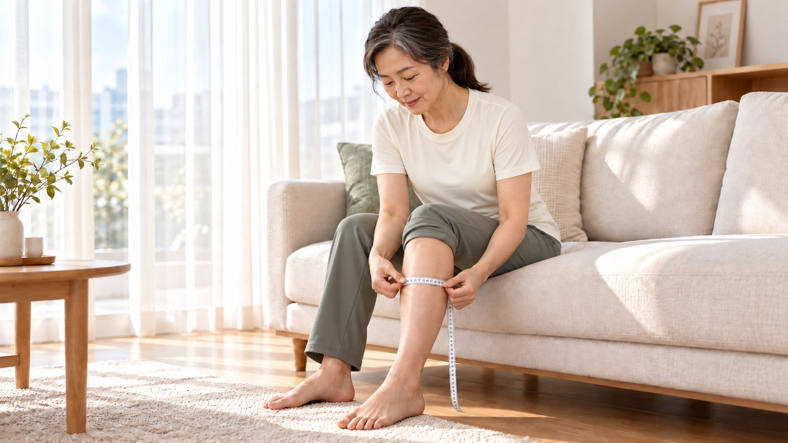
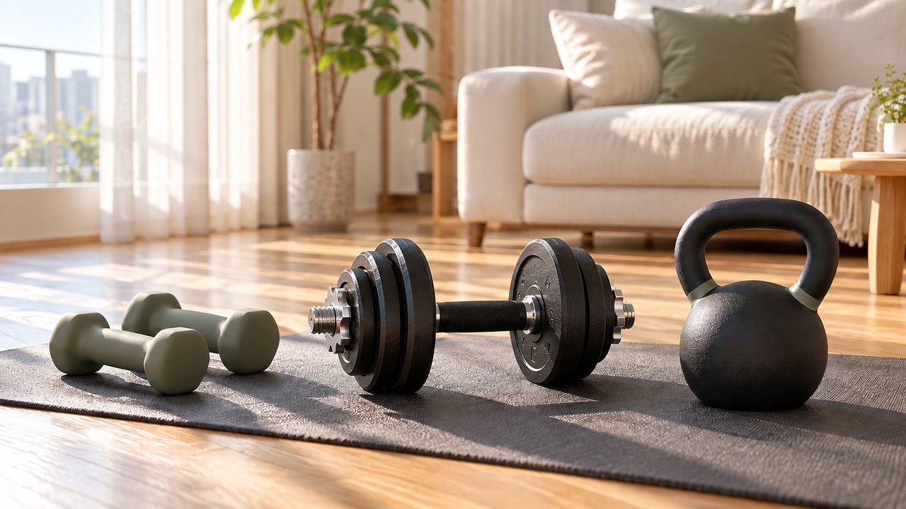
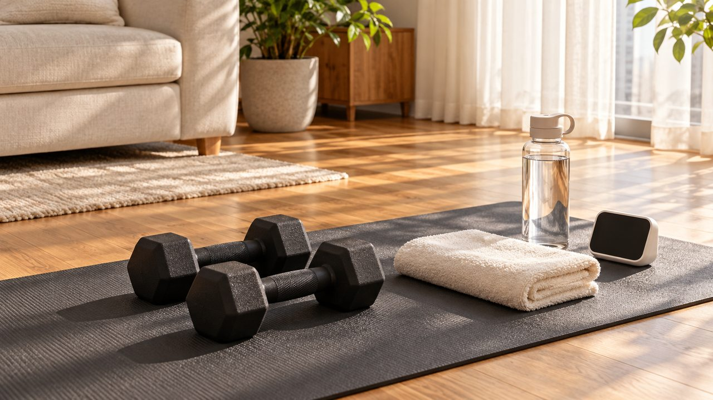
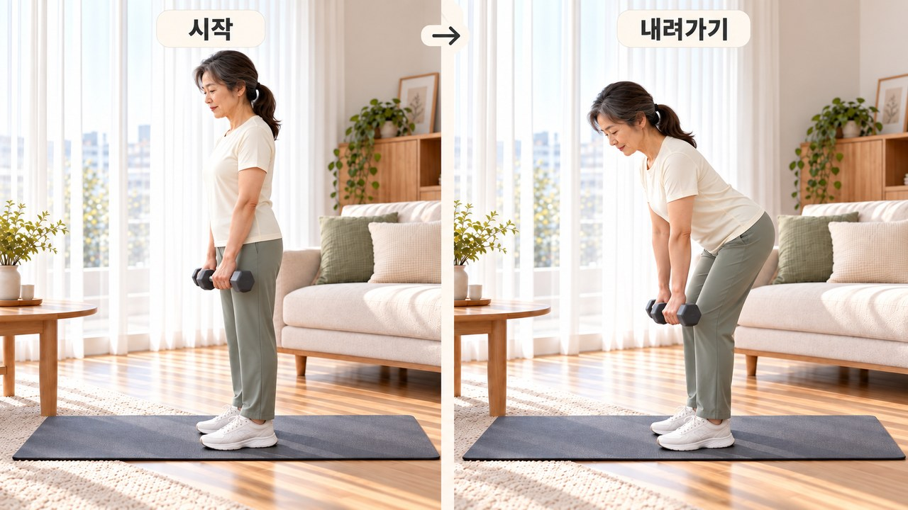

"매일 만보씩 걸었는데 왜 다리가 가늘어질까?" 산책만 믿고 근력 운동 미루다 무릎 힘 풀리는 이유
"하루도 안 빼놓고 동네 공원을 만보씩 걸었는데
왜 자꾸 종아리가 얇아지고 계단 앞에서 다리가 후들거릴까요?"
땀 흘려 산책만 하면 하체까지 든든해질 줄 알았다가
낮은 소파에서 일어설 때 손부터 짚게 된 적 있으시죠?
50대 이후 본격화되는 근육 감소를 막으려면
심폐를 돕는 걷기와 별개로 주 2~3회 자신에게 맞는 아령(덤벨)이나
밴드 등을 활용한 근력 운동을 함께 해주세요.

| 줄자와 손가락 링으로 종아리를 재보세요

성인 근육량은 20대 후반에 정점에 도달한 뒤
50대 무렵부터 내리막을 타다가 80세에 다다르면
전성기 대비 30~40%가량 줄어들게 됩니다.
특히 상체보다 허벅지·종아리 근육이 먼저 빠지기 쉽습니다.

줄자로 종아리의 두툼한 중심 부위 둘레를 재보거나
양손 엄지·집게손가락으로 원을 만들어 종아리를 둘러보시기 바랍니다.
남성 34cm 미만, 여성 33cm 미만으로 종아리가 가늘어졌거나
쥐는 힘(악력)이 남성 28kg·여성 18kg 밑으로 떨어졌다면 적신호입니다.
더불어 팔짱을 끼고 의자에서 5회 일어설 때 12초 이상 소요되거나
평소 보행 속도가 초당 1.0m 밑으로 더뎌졌다면
단순 걷기를 넘어선 하체 근력 보강이 시급한 시점입니다.

| 아령 무게는 내 근력에 맞춰 고르세요

방 한구석의 1kg이나 2kg짜리 가벼운 플라스틱 아령으로
스무 번, 서른 번씩 팔만 까딱이고 계시진 않나요?
바른 자세로 12번을 마쳐도 해당 근육에 여유가 많다면
근섬유는 굳이 단단해질 이유를 찾지 못합니다.

처음엔 1회 기준 무게(1RM)의 40~60% 가벼운 중량(1세트)으로 자세를 익히고
익숙해지면 8~12회를 간신히 들 만한 목표 무게(2~3세트)로 올려보세요.
집에 있는 일반 아령이나 무게가 다른 고정식 덤벨 세트도 사용할 수 있습니다.
초기 적응 중량에서 출발해 1RM의 70~85% 수준까지 단계적으로 높여갈 때
하체 골격근과 무릎 지지력이 눈에 띄게 탄탄해집니다.

루틴을 짤 때도 작은 팔 근육에 먼저 기운을 쏟지 말고
5~10분 워밍업 후 허벅지·둔근·등처럼 큼직한 근육이 일하는
아령·케틀벨 스쿼트나 데드리프트를 앞순서에 두세요.
실제로 59~79세 남녀 32명이 지도하에 3개월간 케틀벨 데드리프트를 훈련했을 때
오른손 쥐는 힘이 7.1kg, 들어 올리는 데드리프트 기록이 16.2kg 향상됐습니다.
한 세트를 마친 뒤엔 60~120초가량 호흡을 가다듬고
자극을 준 부위는 근섬유가 채워지도록 최소 48시간 휴식을 주면서
주간 2~3회 간격을 꾸준히 이어가는 것이 좋습니다.

| 허리 말림과 다리 저림은 조심하세요

50세 전후가 되면 디스크 중심부 수핵의 수분 함량이
어린 시절 88%에서 70~75% 안팎으로 줄어 쿠션감이 약해집니다.
바닥에 놓인 덤벨을 집을 때 등허리만 둥글게 말면
척추 마디에 압력이 쏠려 허리 건강을 해칠 수 있습니다.

위 사진은 덤벨 루마니안 데드리프트의 동작 예시입니다.
정해진 권장 무게를 뜻하지 않으니, 자세를 유지할 수 있는 중량을 고르세요.
무릎을 조금 굽히고 엉덩이를 뒤로 보내되,
허리를 억지로 꺾거나 둥글게 말지 마세요.
덤벨을 다리 가까이 내리다가 자세를 지킬 수 있는 곳에서 돌아오세요.
바닥까지 내리거나 일어선 뒤 허리를 젖힐 필요는 없습니다.
처음엔 기구 없이 고관절을 접는 연습부터 해보세요.
숨을 멈추지 말고 근육을 수축할 때 후 내뱉으며,
하루 체중 1kg당 1.2g의 단백질과 비타민 D·칼슘을 함께 보충해 주세요.
근력 운동을 3주 넘게 중단하면 근육이 다시 줄기 시작하고
12주를 완전히 쉬면 운동으로 늘어난 근력 증가분의 70%가 소실됩니다.
따라서 무리하지 않는 무게로 주 2~3회 리듬을 꾸준히 이어가되,
운동 중 다리로 뻗치는 저림이 생기면 잠시 멈추고 상태를 확인하세요.
만약 발목 힘 빠짐이나 배뇨·배변 불편까지 동반될 때는 즉시 점검받으셔야 합니다.

오늘 저녁에는 만보 걷기만 하고 끝내지 말고
거실 매트 위에서 8~12회 덤벨 스쿼트 1세트부터 시작해 보세요.
여러분은 평소 유산소 걷기 위주로 운동하시나요,
아니면 아령이나 밴드 근력 운동도 함께 챙기시나요?
댓글로 여러분의 평소 운동 습관을 편하게 남겨주세요!

• 국가건강정보포털 (KDCA) — 근감소증·신체활동·추간판탈출증 공식 지침
• 아시아 근감소증 합의안 (AWGS 2019, PMID: 32033882) & Arch Gerontol Geriatr (PMID: 39191151)
• BMC Geriatrics (케틀벨·데드리프트 임상시험, PMID: 35459114)
#덤벨세트 #근감소증 #아령운동 #데드리프트 #케틀벨 #하체근력운동 #종아리둘레 #악력저하 #덤벨스쿼트 #홈트레이닝기구 #에디터혀니 #혀니의꿀단지